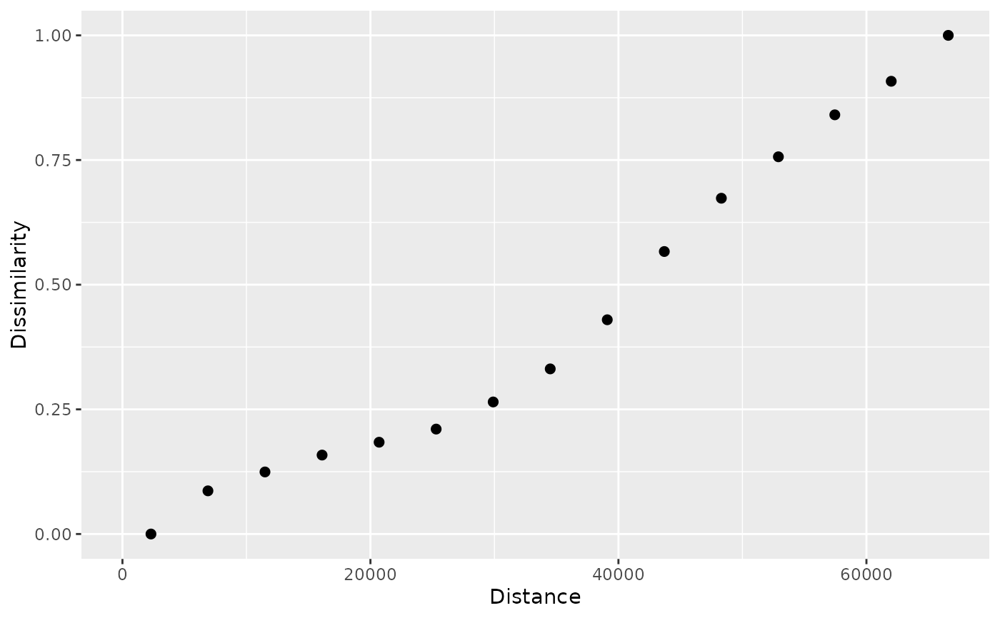

It rescales the dissimilarity values in a patternogram object to a specified range. This allows for easier comparison and interpretation of various patternograms.
rescale_patternogram(x, method = c("minmax"), by = "id", ...)A patternogram object with rescaled dissimilarity values (0 to 1 for "minmax" method)
r = terra::rast(system.file("ex/elev.tif", package = "terra"))
pr = patternogram(r)
#> Metric: 'euclidean' with unit: 'log'; comparing: 500 vectors
pr
#> # A patternogram: 15 × 3
#> np dist dissimilarity
#> * <int> <dbl> <dbl>
#> 1 2976 2300 45.6
#> 2 7890 6895 58.5
#> 3 11617 11495 64.2
#> 4 14187 16100 69.2
#> 5 14915 20700 73.0
#> 6 14826 25300 77.0
#> 7 13697 29900 85.1
#> 8 11816 34500 95.0
#> 9 9731 39100 110.
#> 10 7961 43700 130.
#> 11 5740 48300 146.
#> 12 3962 52900 158.
#> 13 2523 57450 171.
#> 14 1445 62000 181.
#> 15 876 66600 195.
pr_scaled = rescale_patternogram(pr)
pr_scaled
#> # A patternogram: 15 × 3
#> np dist dissimilarity
#> <int> <dbl> <dbl>
#> 1 2976 2300 0
#> 2 7890 6895 0.0866
#> 3 11617 11495 0.124
#> 4 14187 16100 0.158
#> 5 14915 20700 0.184
#> 6 14826 25300 0.210
#> 7 13697 29900 0.265
#> 8 11816 34500 0.331
#> 9 9731 39100 0.430
#> 10 7961 43700 0.567
#> 11 5740 48300 0.673
#> 12 3962 52900 0.757
#> 13 2523 57450 0.841
#> 14 1445 62000 0.908
#> 15 876 66600 1
plot(pr_scaled)
